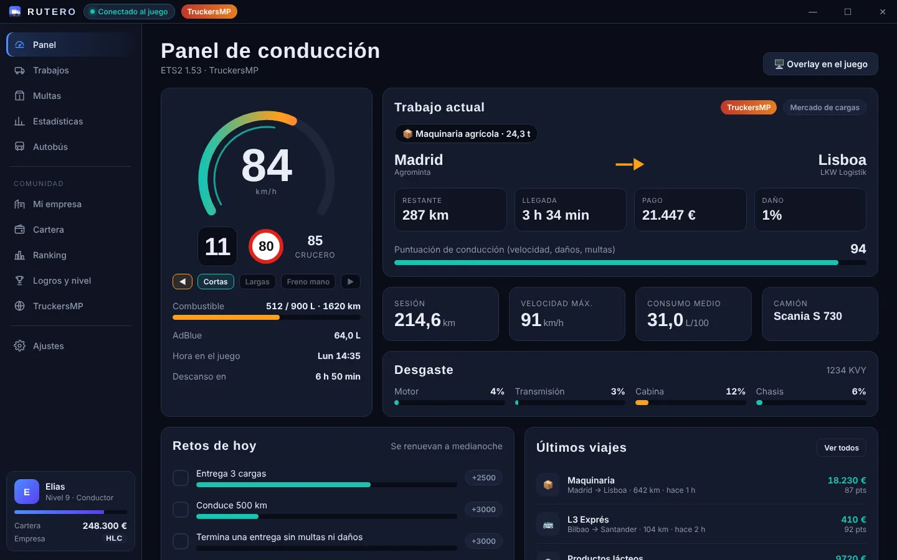
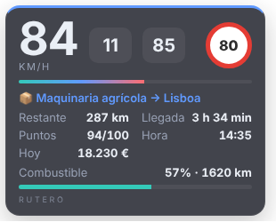
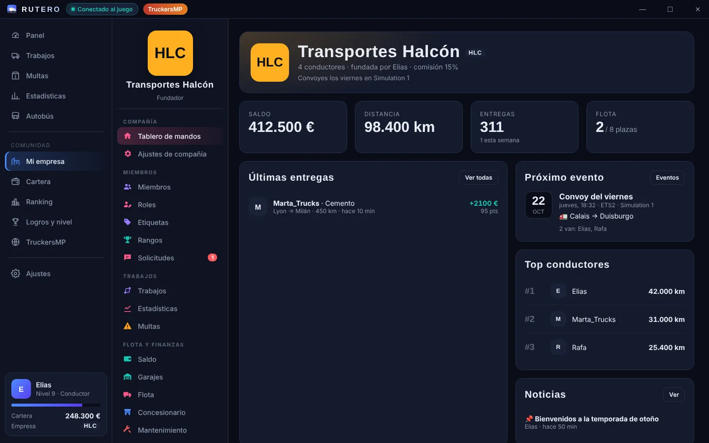
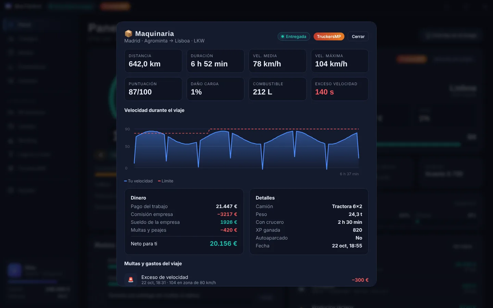
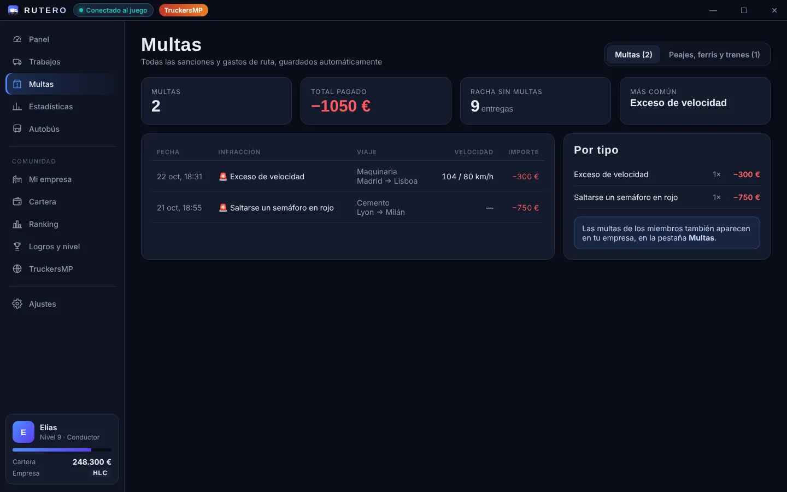
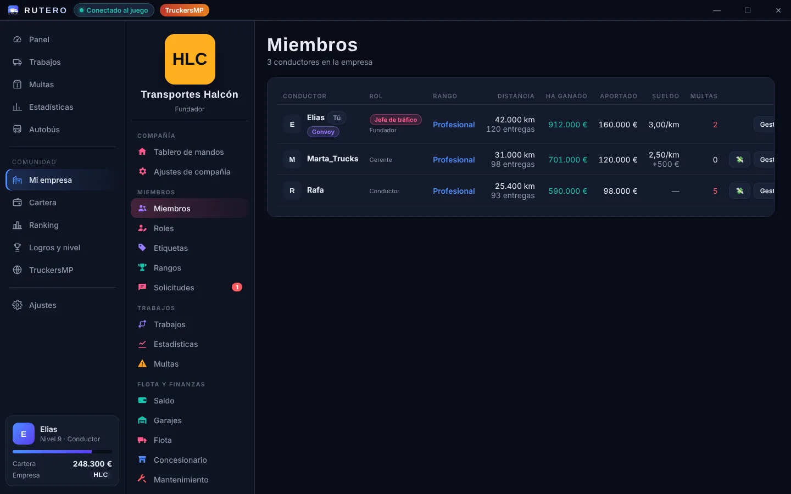
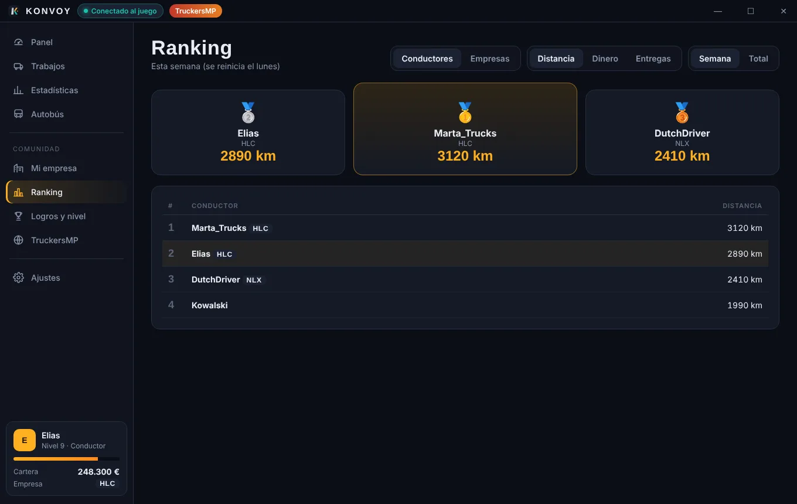
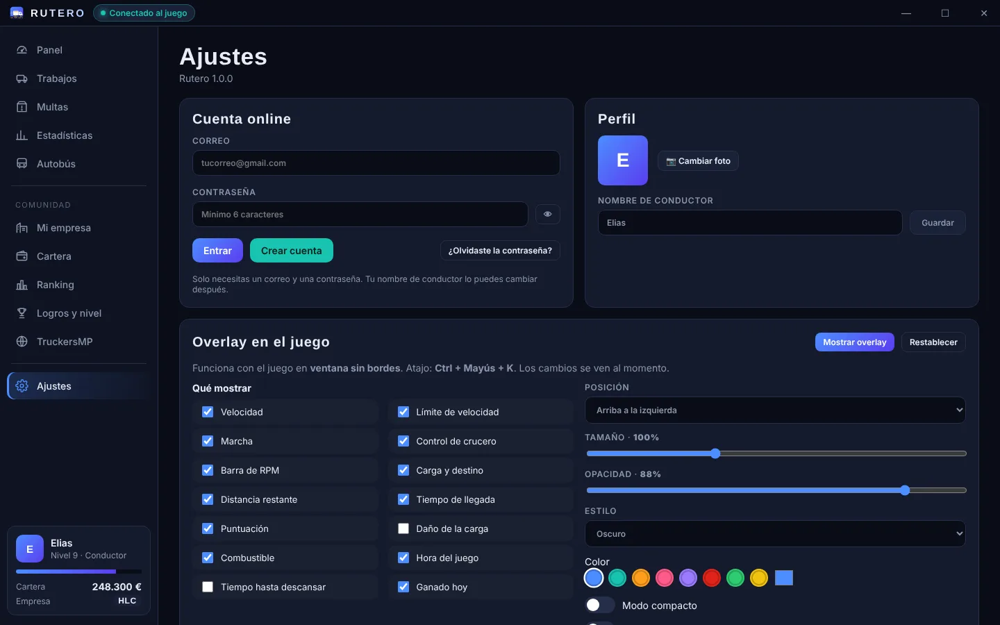
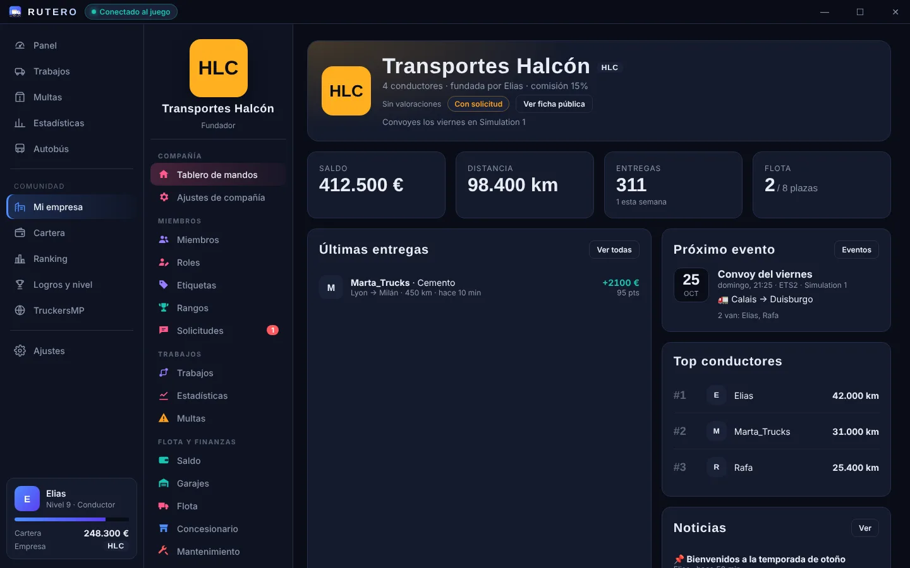
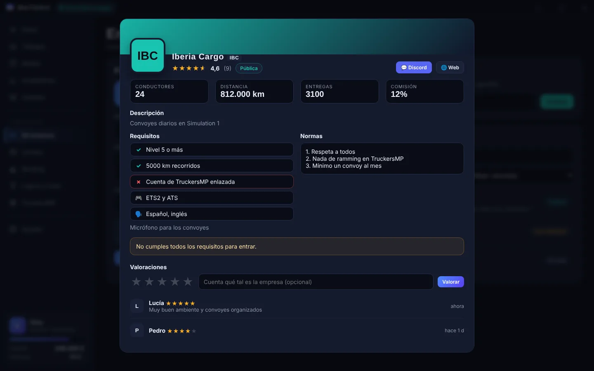

Rutero registra tus viajes, multas y ganancias mientras conduces. Crea tu empresa con amigos, compite en el ranking y lleva un overlay a tu gusto dentro del juego.


Rutero lee la telemetría del juego y se encarga del papeleo: tú solo conduce.
Cada entrega se guarda sola con ruta, carga, km, consumo, daño, puntuación y gráfica de velocidad.
Exceso de velocidad, semáforos en rojo, peajes, ferris… con el límite y tu velocidad en ese momento.
Ganas dinero por cada trabajo. Tu empresa te paga un sueldo por km o por entrega.
Crea o únete a una empresa, compra camiones y garajes, organiza convoyes y reparte el dinero.
Compite por km, dinero o entregas contra otros conductores y otras empresas.
Detecta si juegas online, enlaza tu perfil y muestra tus partidas multijugador.
Líneas, paradas y pasajeros para quienes prefieren llevar gente en vez de carga.
Retos diarios con recompensa, niveles de conductor y logros que desbloquear.
Las novedades llegan desde el botón de la app: no hace falta volver a descargar nada.
Busca empresa por valoración, mira su banner, normas y requisitos, y entra al momento o envía tu solicitud.
Cobras tu parte del pago (≈45 %): más con cargas peligrosas, pesadas o delicadas y menos con granel.
Español, English, Français, Deutsch, Italiano, Português y Polski. Se elige solo según tu Windows.
Un panel encima del juego que configuras desde Ajustes y ves cambiar al momento. Abre y cierra con Ctrl + Mayús + K.
Un panel completo para dirigir tu VTC con amigos.








Baja Rutero-Setup.exe desde el botón de descarga.
Ábrelo. Si Windows avisa, pulsa «Más información» → «Ejecutar de todas formas».
En Ajustes pulsa «Instalar plugin» con el juego cerrado. Solo la primera vez.
Crea tu cuenta con tu correo y una contraseña. ¡Y a la carretera!
Sí, totalmente. Sin anuncios ni suscripciones.
Sí. Rutero detecta si juegas en TruckersMP y marca esos viajes como multijugador. Puedes enlazar tu ID de TruckersMP en la pestaña TruckersMP.
Porque el instalador aún no tiene firma digital de pago. Es normal en apps pequeñas: pulsa «Más información» → «Ejecutar de todas formas».
En Ajustes → Actualizaciones, o desde el aviso de la barra de arriba. La app descarga la versión nueva y se reinicia sola.
Pon el juego en «ventana sin bordes» (borderless) para que el overlay se vea por encima.
Descarga Rutero gratis para Windows y empieza a registrar tus viajes hoy.
⬇ Descargar Rutero